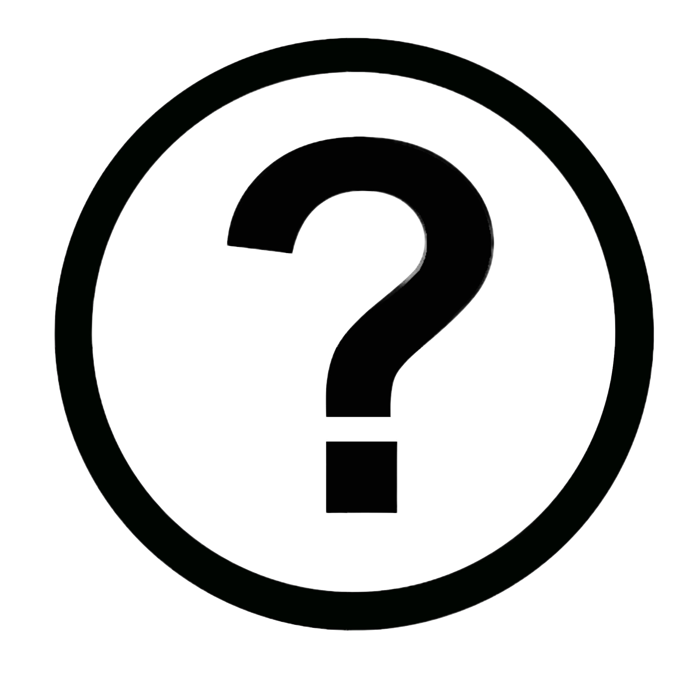
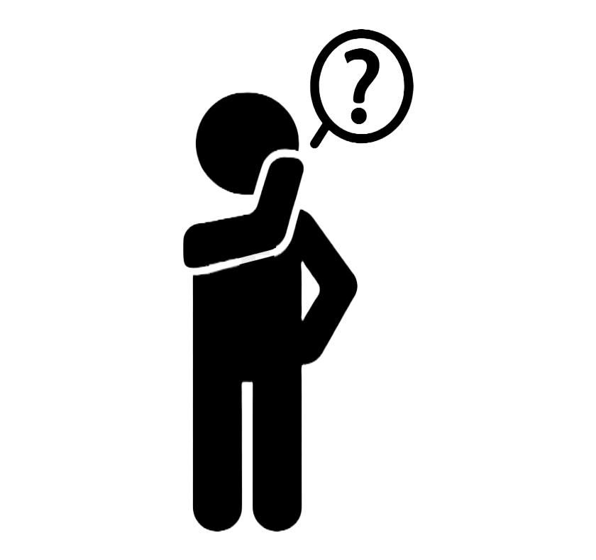

So who am I really?
I'm Kirk Stanley Tan, I'm 15 years old and I am originally from
Tacloban, Leyte but I moved to Makati because of Typhoon Yolanda. I'm currently a Grade 10 Student in
Gen. Pio Del Pilar National High School. I like playing sports and video games, to be specific basketball
and matrial arts. I play any video game that makes me interest namely action or racing games whatever fits
my mood. I love playing with my friends, makes the experience better since I have someone to share it with.
I love music, I listen to it almost everytime since it makes me focus more on what I'm doing. My dream is
cloudy still, but I'm leaning more into feelance since I will have freedom on what I can do and choose.
Probably coding since I'm interested in it which makes it much easier to understand. I also look forward
to build my body through workouts and exercise, and also learn more martial arts.